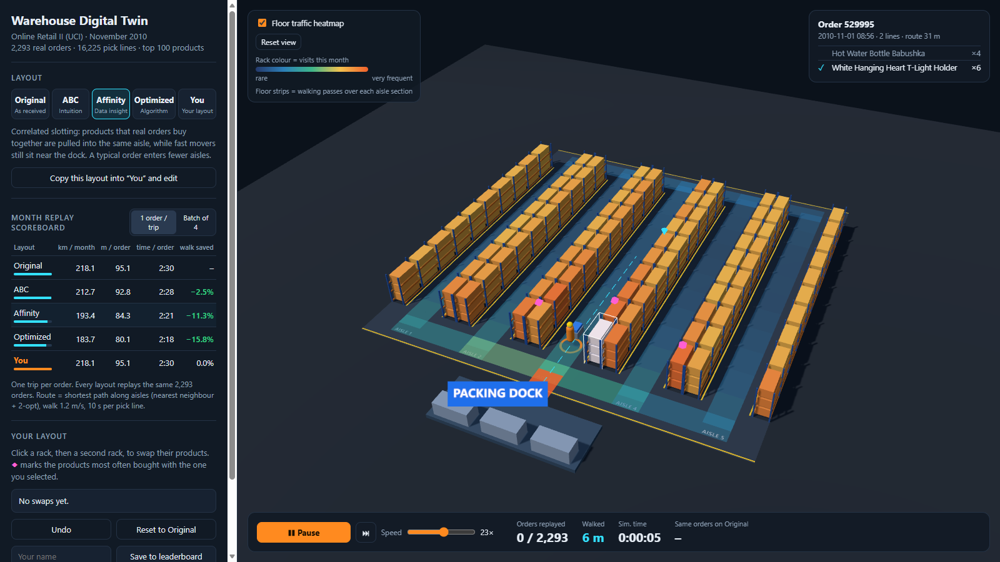
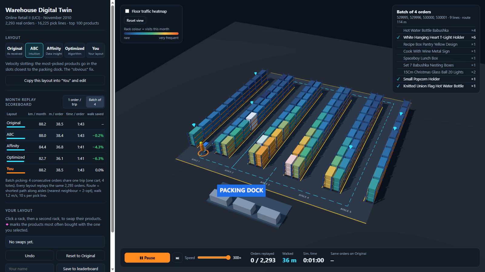

Everything you need to explain and defend the project: architecture, every decision, the code layer by layer, the numbers, the demo script and the hard questions.
−15.8%saved by Optimized layout (simulated annealing)
The 30-second pitch (memorise this)
“Pickers in a warehouse spend more time walking than picking, and where each product sits decides how far they walk. We built a 3D digital twin of a picking floor that is driven by 2,293 real customer orders. You can rearrange the shelves, and the twin replays exactly the same orders to measure the walking saved, rather than just claiming it. The textbook fix, putting best-sellers near the dock, saves only 2.5%. Using what customers buy together saves 11%, our optimizer finds 16%, and the savings hold on a week of orders the model never saw. Visitors can play against the optimizer.”
Project folder: C:\Users\007ja\warehouse-twin · Run: double-click start-demo.bat (offline) or cd web → npm run dev.
1Architecture & the 10 key decisions
online_retail_II.xlsx (~1M lines)
│ once, offline
▼
preprocess.py (Python + pandas) clean → top 100 products → orders
│ products.json · orders.json · stats.json
▼
┌───────────────── SIMULATION CORE web/src/sim/ (plain JavaScript) ─────────────────┐
│ warehouse.js floor as a graph + all shortest paths │
│ route.js route each trip (dock → picks → dock) and score a layout │
│ layouts.js Original · ABC · Affinity │
└────────────┬───────────────────────────────────────────────┬───────────────────────┘
same code │ same code │
▼ ▼
optimize.mjs (Node, offline) Browser app (Vite + Three.js)
simulated annealing → layouts.json ───────────► scene.js 3D floor, picker, heatmaps
+ hold-out test main.js scoreboard, game, replay
One sentence: Python turns raw orders into clean JSON once. A single shared JavaScript simulation core routes and scores any layout. It is used offline to compute the optimized layout and live in the browser to score the player's layout.
The 10 decisions and why
Decision
Why (what to say)
1. Pre-process offline in Python
The raw file is 45 MB of Excel (~1M lines). Parsing it in a browser is slow and pointless because the result never changes. pandas is the standard tool, and the problem statement suggests it. The browser loads only ~240 KB of JSON.
2. One month: November 2010
Pre-Christmas peak: the most orders and clear fast movers. The problem statement asks for one month.
3. Top 100 products, ranked by pick lines
A picker walks to a slot once per order line, whatever the quantity, so lines drive walking, not units. We model the forward pick area (fast-pick zone); the other products would sit in reserve storage. The top 100 are 3% of products but 22% of picks.
4. Static website, no backend
Everything is precomputed or cheap: scoring a full month takes milliseconds. It runs fully offline (expo Wi-Fi risk) and can be deployed free.
5. ⭐ One shared simulation core
The optimizer (Node) and the game (browser) use the sameroute.js, so the numbers are identical (218.1 / 212.7 / 193.4 / 183.7 km). Every layout is judged by the same rules on the same orders. This is the “measured, not claimed” requirement.
6. Scoring separate from animation
Scoring replays the whole month instantly and feeds the scoreboard. The animation shows the same routes one order at a time for people. That's why a swap rescored instantly.
7. Floor = graph, so walking follows aisles
61 nodes, 64 edges, and no edge passes through a rack, so cutting through racks is impossible by construction. Floyd–Warshall gives all shortest paths, plus the next hop used to draw each route.
8. Routing: nearest-neighbour + 2-opt
Orders average 7 lines; 2-opt is near-optimal at that size. It is deterministic and identical for every layout, so the comparison is fair. Real pickers aren't optimal either. Exact alternative: the Ratliff–Rosenthal algorithm (future work).
9. Our own floor parameters, stated openly
5 aisles × 2 sides × 10 bays = 100 slots for 100 products; 2 m bays, 3 m aisles, cross-aisles at front and back, dock at front centre, 1.2 m/s, 10 s per line. We tested 6 geometries and the conclusion was the same in all of them.
10. Three.js + Vite, plain boxes
Fewer dependencies than React Three Fiber. Instanced meshes mean 300 cartons are drawn in one GPU call, so it runs smoothly on an average laptop (a watch-out in the brief).
The layout ladder: the story of the project
Layout
Idea
Message
Walking saved
Original
Products in stock-code order
Where we start
–
ABC
Most-picked products nearest the dock
Intuition
−2.5%
Affinity
Products bought together share an aisle
Data insight
−11.3%
Optimized
Simulated annealing over swaps, judged by replay
Algorithm
−15.8%
You
Swap racks by hand
Human vs machine
live
Why ABC is weak here (the key insight)
An average order has 7 lines (median 5, max 74) spread across many products, so the picker enters most aisles regardless. Putting fast movers at the front doesn't stop that; grouping co-ordered products into one aisle does. This matches the warehousing literature: frequency-based slotting is strongest for small orders, and correlated slotting gains as orders grow.
2Layer: data pipeline preprocess/preprocess.py
Dataset: Online Retail II, UCI Machine Learning Repository, licence CC BY 4.0. It's a UK online gift wholesaler, Dec 2009 – Dec 2011, with one row per invoice line: Invoice, StockCode, Description, Quantity, InvoiceDate, Price, Customer ID, Country. The Excel workbook has two sheets (2009-2010 and 2010-2011).
Step by step
Load + cache. Reading Excel is slow (~1 min per sheet), so each sheet is saved to CSV the first time and reused after that. The two sheets are concatenated and drop_duplicates() removes the December 2010 rows that appear in both.
Filter to one month:InvoiceDate formatted %Y-%m == "2010-11", giving 76,584 lines and 3,669 invoices.
Remove cancellations: invoices starting with "C" (−1,192 lines). These are returns or credit notes, not picks.
Remove non-product codes (−282): POST, DOT, M, BANK CHARGES, AMAZONFEE, D, CRUK, PADS, C2, S, B, ADJUST… plus regex ^(gift_|TEST|DCGS|BOXCHARGE). These are postage, fees, discounts and manual adjustments; nobody walks to a shelf for them.
Define a pick:groupby(["Invoice","StockCode"]). If an invoice lists the same product twice, the picker still visits the slot once, so it becomes one line with the quantities summed.
Rank products by number of pick lines and take the top 100. Top product: White Hanging Heart T-Light Holder, 389 picks; the 100th product has 111 picks.
Build the orders: keep each invoice's lines on the top 100, sort by time. Result: 2,293 orders, 16,225 lines, 7.08 lines/order.
Output format
// products.json: id = rank by picks (0 = most picked)
{ "id": 0, "code": "85123A", "name": "White Hanging Heart T-Light Holder", "picks": 389, "units": ... }
// orders.json: items = [productId, quantity]
{ "id": "529995", "t": "2010-11-01 08:56", "items": [[0, 6], [57, 4]] }
// stats.json: every cleaning count, shown in the app under "About the data"
Questions on this layer
Why count lines and not quantity?
Walking is driven by visits. Picking 24 units from one slot is one walk. Quantity affects pick time, not distance.
You dropped 2,918 products, so isn't the data unrealistic?
We model the forward pick area that real warehouses run for their fastest SKUs. The top 100 products are 3% of the range but carry 22% of all picks. Orders are trimmed to their lines on those products, which is why 2,719 invoices become 2,293 orders (426 had no top-100 line).
Why not use both years?
The brief says one month. The pipeline takes a --month argument, so any month can be generated in one command.
How do you know the cleaning is right?
Every removal is counted and shown (stats.json and the app's About panel), and the top products match known best-sellers in this dataset.
3Layer: the warehouse graph web/src/sim/warehouse.js
Geometry (metres)
back cross-aisle (z = 21.5) ──────────────────────────────────────────
z R|A|R R|A|R R|A|R R|A|R R|A|R R = rack 1 m deep, A = aisle 3 m wide
↑ R|A|R R|A|R R|A|R R|A|R R|A|R 10 bays × 2 m = 20 m long aisles
│ front cross-aisle (z = −1.5) ─────────────────────────────────────────
└→ x [DOCK] (12.5, −4.5), in line with aisle 3
Pitch per aisle = rack + aisle + rack = 1 + 3 + 1 = 5 m, so the floor is 25 m wide. Aisle centre x = 2.5 + 5·a.
Bay b pick point: z = 2·b + 1 (centre of the 2 m bay). The picker stands in the aisle centre; slots on the left and right rack share that point.
Aisles are numbered so they read 1→5 left to right when looking from the dock.
The graph
Nodes: per aisle a front end, 10 bay points and a back end (12 nodes) × 5 aisles, plus the dock = 61 nodes.
Edges: along each aisle (11 × 5 = 55), front and back cross-aisle links between neighbouring aisles (4 + 4 = 8), dock to the front of aisle 3 (1) = 64 edges. Weight = Euclidean length of that straight segment.
There is no edge through a rack, so every shortest path is a legal walking path. That covers the brief's “distance must follow aisles” watch-out by construction.
Floyd–Warshall all-pairs shortest paths
// for every intermediate k, try improving i→j by going i→k→j
for k: for i: for j:
if dist[i][k] + dist[k][j] < dist[i][j]:
dist[i][j] = dist[i][k] + dist[k][j]
next[i][j] = next[i][k] // first step on the best path: used to draw routes
Cost is N³ = 61³ ≈ 227k steps, which is instant. The result is a distance lookup table (any slot to any slot in O(1)) and a next-hop table to rebuild the exact path for animation and the traffic heatmap. Dijkstra from every node would also work; Floyd–Warshall is simplest for a small, dense lookup.
Worked examples (have one ready)
Route
Calculation
One way
Dock → aisle 3, bay 1 (nearest slot)
dock→front 3 + front→bay1 (−1.5 → 1.0) 2.5
5.5 m
Dock → aisle 1, bay 1 (far left)
3 + along front cross-aisle 10 + 2.5
15.5 m
Dock → aisle 3, bay 10 (deep)
3 + (−1.5 → 19.0) 20.5
23.5 m
Each slot stores dockDist. ABC sorts slots by this value.
Configuration (CFG)
aisles
bays
bayW
rackD
aisleW
crossW
walkSpeed
pickSecPerLine
batchSize
5
10
2.0 m
1.0 m
3.0 m
3.0 m
1.2 m/s
10 s
4
Why 1.2 m/s and 10 s per line?
1.2 m/s is a typical walking speed pushing a cart (free walking is ~1.4). 10 s covers reaching, scanning and placing in the tote. Both are applied identically to every layout, so they shift absolute times but not the ranking. Pick time is layout-independent, so it only dilutes the time savings.
Did you tune the geometry so your method wins?
No. We tested bay widths 1.2 / 2.0 / 2.7 m with 5 and 10 aisles. Compared with a random layout, ABC saved 5.7–7.8% and Affinity 11.6–14% in all six. The ordering never changed. 2.0 m is a realistic shelving bay.
4Layer: routing & scoring web/src/sim/route.js
Definitions
Layout = array productAt[slot] = productId (100 entries, a permutation). slotOfProduct() inverts it.
Trip = one walk from the dock and back. Single mode: 1 order per trip. Batch mode: 4 consecutive orders share one trip (one cart, 4 totes). buildTrips() merges their products (duplicates visited once) and keeps the line count.
routeNodes(): build a route through all pick points
// 1) nearest neighbour: from the dock, always walk to the closest unvisited pick point
tour = [DOCK]; while points left: go to closest; tour.push(DOCK)
// 2) 2-opt: reverse a section of the route if that makes it shorter; repeat until nothing improves
delta = d(t[i-1], t[j]) + d(t[i], t[j+1]) - d(t[i-1], t[i]) - d(t[j], t[j+1])
if delta < 0: reverse(t[i..j])
Distances d() come from the Floyd–Warshall table, so each leg is already the shortest legal aisle path.
Two products in the same bay (left and right rack) share one pick point, so it is deduplicated and visited once.
Deterministic: the same input always gives the same route, so the browser and Node agree exactly.
2-opt guarantees a route with no improving segment reversal (a local optimum). For ~7 stops this is typically optimal or within a few %.
scoreLayout(): the “measured, not claimed” function
for each trip: dist += routeNodes(pick points of its products).dist
walkSec = dist / 1.2
pickSec = lines × 10
distPerOrder = dist / nOrders secPerOrder = (walkSec + pickSec) / nOrders
visits[slot] += 1 per trip that stops there // → rack heatmap
Scoring the full month (2,293 trips) takes a few milliseconds in the browser. That is why a swap updates the scoreboard instantly.
edgeTraffic(): floor heatmap
For every trip, expand the route into its exact edge-by-edge path (next-hop table) and count how many times each of the 64 edges is walked. These counts colour the floor strips, normalised to the Original layout so colours compare across layouts. It shows the bottleneck at the dock end of the cross-aisle.
Why not solve each route optimally?
Ordering the stops is a travelling-salesman problem. An exact polynomial algorithm exists for this two-cross-aisle layout (Ratliff & Rosenthal, 1983), and we list it as future work. NN + 2-opt is near-optimal for small orders, and it's what matters for fairness: every layout gets the same router.
Could the router favour one layout?
Any heuristic adds a small amount of noise, but it's applied identically, and the optimizer is scored with the same router. The ranking is consistent across geometries and on the hold-out week.
Why S-shape/return routing not used?
Those are simple rules for human pickers without a route. An optimising router like ours generally finds routes at least as short, while still following the aisles realistically. Comparing them is easy future work.
Products sorted by stock code (natural sort), filled slot by slot, aisle by aisle. It's a generous starting point: stock codes group product families (e.g. hand-warmer designs), so Original (218.1 km) is already better than a random layout (~225.5 km). Starting from random would have made our gains look bigger.
ABC (velocity slotting)
Sort slots by dockDist (ties by slot id); sort products by picks. The most-picked product goes in the nearest slot, and so on. This is the auto baseline the brief asks for.
Affinity (correlated slotting)
Co-occurrence matrixco[i][j] = number of orders containing both products i and j (100 × 100).
Walk through slots from nearest to farthest. For each slot, choose the unplaced product with the best score: score(p) = picks[p] + w × Σ co[p][q] for q already placed in this slot's aisle
With w = 0 this is exactly ABC. Larger w pulls bought-together products into the same aisle.
w is chosen by replay from {0.05 … 8}. Full month: w = 8 (the largest tried, so affinity matters a lot; a wider search is future work). In the hold-out, built on weeks 1–3: w = 1.
Optimized: simulated annealing (SA)
start = Affinity layout
repeat 80,000 times:
pick two random slots (skip if same pick point); swap their products
delta = change in total walking // re-route ONLY orders containing either product
T = 40 · (0.2/40)^(it/iters) // temperature cools from 40 m to 0.2 m
accept if delta ≤ 0, or with probability e^(−delta/T) // Metropolis rule
otherwise undo the swap
keep the best layout ever seen // seed 42 → reproducible
Why accept worse swaps sometimes? To escape local optima early on. As T falls it becomes pure hill-climbing.
Delta evaluation is the trick that makes it fast. A product appears in ~160 of 2,293 orders, so each step re-routes ~300 orders, not all of them.
Run stats: 80,000 iterations, 462 swaps accepted, ~44 s on a laptop. It goes from 193.4 km (Affinity) to 183.7 km.
The objective is the exact same scoring function as the game, so “Optimized” is optimal by the same yardstick.
Hold-out validation (anti-overfitting)
Orders before 22 Nov (1,527) are used to build ABC, Affinity and SA. Orders from 22–30 Nov (766) are used only for testing.
Tested on final week
km
Saved vs Original
Original
74.80
–
ABC
73.35
−1.9%
Affinity
66.40
−11.2%
Optimized
64.38
−13.9%
What to say“The improvement is not memorising the month. Layouts designed on three weeks still save 11–14% on the next week's unseen orders. That's the number a warehouse manager would actually get.”
Why simulated annealing and not a genetic algorithm or an ILP?
Slot assignment with routing is a quadratic-assignment-type problem (NP-hard). SA is simple, needs only “score a swap”, which we already have, and is a standard choice for it. An ILP can't easily include the routing step.
Is the optimized layout the global optimum?
No guarantee, so we call it near-optimal, the machine's best found. That leaves room for a human to occasionally beat it, which is part of the game.
6Layer: the 3D scene web/src/scene/scene.js

Affinity layout during replay: dashed route, picker with cart, order card ticking off real invoice lines, pink ◆ co-purchase hints, floor traffic heatmap.
Building blocks
Part
How
Renderer / camera
WebGLRenderer (antialias, pixel ratio ≤ 2), perspective camera, OrbitControls (drag to rotate, scroll to zoom, damping, can't go below the floor).
Lighting
Hemisphere light (sky/ground fill) + one directional “sun” with a 2048² soft shadow map.
Floor
Planes for floor, walkways, yellow safety lines, aisle labels drawn on a canvas texture.
Racks
InstancedMesh: 220 blue uprights, 60 orange beams, 300 cartons (100 slots × 3 shelf levels). Each is one draw call. Carton instance id = slot×3 + level.
Rack colours
Per-instance colour = visits this month (sqrt scale, min–max over all layouts so a product keeps its colour when moved). Blue = rare, red = very frequent.
Clicking racks
Raycasting: cast a ray from the mouse into the scene; the hit gives instanceId, and floor(instanceId / 3) is the slot. A click is distinguished from a drag by <6 px of mouse movement.
Picker
Group of capsule body (hi-vis orange), head, helmet, cart and totes. Bobs while walking and faces the direction of travel (atan2(dx, dz)).
Route & markers
Dashed animated line along the route; cyan cones above pending picks; pink diamonds above co-purchase partners; wireframe boxes for hover, selection and swap target.
Traffic heatmap
One translucent strip per graph edge (64), coloured by walking passes.
Why will it run smoothly on any laptop?
About 600 boxes drawn in ~10 draw calls thanks to instancing, simple materials, one shadow light, no textures except labels. The brief explicitly asked for simple geometry.
Why not use 3D models (Kenney assets)?
Plain boxes were allowed, load instantly, and keep the focus on the data. Assets are a cosmetic upgrade.
7Layer: app, game & replay web/src/main.js
Startup
Fetch the 4 JSON files (products, orders, stats, layouts).
Build the warehouse graph and scene, and the co-occurrence matrix (for hints).
Score all 5 layouts, render the scoreboard, colour the racks.
Game mode (“You”)
Click rack A (selected, white frame; pink ◆ show its co-purchase partners), then rack B: products swap.
swap() swaps two entries in the array, re-scores the full month (milliseconds), and shows a toast like “−312 m walking per month” and the gap to ABC.
Badges: beats ABC → beats Affinity → beats the optimizer!
Undo stack, “Reset to Original”, “Copy this layout into You” (start from ABC or Affinity and improve).
Your layout is saved in the browser (localStorage), so it survives a refresh.
Leaderboard: name + single-order km saved locally; clicking an entry loads that layout. It works offline and needs no server.
Replay (the animated twin)
A small state machine advanced every frame by dt × speed (speed 1×–300×):
startTrip: route the next trip, expand it to a point-by-point path, mark which points are pick stops, show the order card.
walking: move along segments at 1.2 m/s of simulated time; add to “Walked”.
arrive: at a stop, tick the order lines, flash the carton, then dwell 10 s × lines.
finishTrip: back at the dock, add the trip's distance and the same trip's distance on the Original layout to the “Same orders on Original” counter. Then the next trip.
Changing layout, mode or swapping resets the replay, so the counters always belong to one layout.
Demo helpers
Keyboard: Space play/pause · 1–5 layouts · H traffic heatmap · B batch · Esc deselect.
Translate to real life
Optimized vs Original saves 34 km of walking per month, about 7.9 hours of picker time (34,400 m ÷ 1.2 m/s) for this one zone. Batch picking alone cuts walking by 60% (218 → 88 km).
Why time % < distance %
Per order: ~79 s walking + ~71 s picking (7.1 lines × 10 s). Slotting only shrinks the walking part, so 15.8% less walking means ~8% less total time.

Batch mode: one cart serves 4 real invoices; the route sweeps the floor via the back cross-aisle, so slotting matters less.
Data facts
Raw lines / invoices (Nov 2010)
76,584 / 3,669
Top product
T-Light Holder, 389 picks
Cancelled · non-product · invalid removed
1,192 · 282 · 353
100th product
111 picks
Clean lines / invoices / products
74,757 / 2,719 / 3,018
Lines per order
mean 7.1, median 5, max 74
Top-100 share of picks
22.1%
Single-line orders
332
9Demo script & morning checklist
3-minute walkthrough
Time
Do
Say
0:00
Original view, Data panel open
The 30-second pitch. “This is driven by 2,293 real invoices from a UK wholesaler; here's the cleaning we did.”
0:30
Press Space (Original replay, speed ~60×)
“Every order is a real invoice. The picker follows the aisles, never through racks, and the counters measure distance and time.”
1:00
Press 2 (ABC), point at the scoreboard
“The textbook fix: best-sellers by the dock. Same orders replayed: only 2.5%. Why? Orders have 7 items, so you still visit most aisles.”
1:25
Press 3 (Affinity), H heatmap
“Using what customers buy together, these items share an aisle: 11%. The heatmap shows less traffic.”
1:50
Press 4 (Optimized)
“Our optimizer tried 80,000 swaps, each scored by replaying the month: 16%. And it holds on a week it never saw.”
2:15
Press 5, hand over the mouse
“Your turn: click a rack, then another. Pink diamonds show what's bought together. Can you beat ABC?”
2:45
Press B (batch)
“Batch picking 4 orders per trip cuts walking 60%, a process change that beats any slotting.”
Checklist for the morning
☐ Laptop charged + charger. Close other apps for smooth 3D.
☐ Start the app before the judges come: double-click start-demo.bat (works with Wi-Fi off). Or in VS Code: cd web → npm run dev.
☐ Test once with Wi-Fi off.
☐ Clear your test leaderboard entries if you want a fresh board (browser DevTools → Application → Local Storage → delete wt-leaderboard), or keep a few as “targets”.
☐ Press “Reset to Original” on the You tab so visitors start fresh.
☐ Browser fullscreen (F11). Keep this guide open on your phone.
☐ Know where the files are: preprocess/preprocess.py, web/src/sim/*, web/scripts/optimize.mjs, README.md.
10Question bank
Concept
What makes this a digital twin and not just an animation?
It's driven by real operational data (orders), it simulates the physical process with real parameters (distances, speeds, pick time), and it lets you test a change (a layout) virtually and measure the outcome before doing it on the real floor. Connected to live scans, it would mirror the warehouse in real time.
Where is the electronics / ECE angle?
A twin needs sensors. Live inputs would be barcode/RFID scans at each pick (timestamps and locations), BLE/UWB tags on carts for indoor positioning, and pick-to-light modules on shelves. Our JSON event format is what those devices would stream. The twin is the software layer on top of that IoT hardware.
Who would use this?
Warehouse or e-commerce operations managers deciding re-slotting, which is normally done by gut feel or expensive WMS modules. It's also a training tool that shows staff why slotting matters.
Method
How do you guarantee before/after is fair?
Same 2,293 orders, same router, same parameters, same code (shared module). Only the product-to-slot mapping changes.
Why didn't you use straight-line distance?
The brief forbids it, and it would be wrong: two slots back-to-back across a rack are 1 m apart in a straight line but can be 20+ m apart on foot. Our graph has no edges through racks.
Why is ABC the baseline if it's weak?
It's the standard industry baseline the brief requires (“fast movers nearest the dock”). Showing it's weak on multi-line orders is a finding, not a flaw.
Is co-occurrence just correlation, so could it change next month?
Yes, it shifts with season, which is why we re-run the pipeline monthly and validated on an unseen week. In practice you'd re-slot periodically.
Complexity / runtime?
Floyd–Warshall O(N³) with N = 61, done once. Routing per order is O(k²) per 2-opt pass, with k ≈ 7. A full-month score takes milliseconds. SA: 80k iterations × ~300 re-routed orders ≈ 44 s offline.
What if two products are in the same bay on opposite sides?
They share one pick point (the picker stands in the aisle), so visiting both costs no extra walking. The optimizer exploits this by pairing co-ordered products face to face.
Implementation
Which parts did you write vs libraries?
Libraries: pandas (data), Three.js (3D rendering), Vite (build). Everything else is our own code: the cleaning rules, graph, shortest paths, router, scoring, ABC/Affinity/SA, the scene, the game and the replay.
How was AI used?
(Answer honestly; the event allows ethical AI use.) For example: “We used an AI coding assistant to speed up implementation; the design decisions, validation (hold-out test, geometry sensitivity) and analysis are ours, and we can explain every part.” That's why this guide exists.
Can it handle a different warehouse?
Yes. Change CFG (aisles, bays, widths, speed) and re-run npm run optimize. The graph, router and scene are generated from the config.
Where is the data stored? Any backend?
No backend. Static JSON plus the browser's localStorage for the player's layout and leaderboard. It runs offline and can be hosted free on Vercel or Cloudflare Pages.
Curveballs
Your Affinity weight hit the top of the search range (w = 8). Doesn't that mean you didn't search enough?
Good catch. It means co-purchase matters even more than raw popularity here; a wider search may squeeze a little more. The optimizer starts from Affinity and continues the search anyway, which is how it reaches 15.8%.
Only 462 of 80,000 swaps accepted. Is SA working?
Yes. It starts from an already-good layout (Affinity), so most random swaps make things worse and are rejected; that is expected. The total still dropped from 193.4 to 183.7 km.
Why is batch picking ABC only 0.2% better?
A 4-order batch has ~28 lines, so the cart visits nearly every aisle whatever the layout. Slotting helps less once routes already cover the floor. That's a real operational insight.
How accurate is your model compared with a real warehouse?
It's a first-order model: distances and times scale realistically, and the relative ranking is robust (6 geometries + hold-out). Absolute minutes would need calibration with real time studies, which a deployment with scanners would provide.
11Limitations & future work
Say these yourself before the judges do. It shows you understand the model.
Limitation
Future work
One picker, no congestion
Next feature: several pickers; if two meet in an aisle segment one waits, and the wait adds to time.
All slots the same size; product volume ignored
Cube-per-order index (COI) slotting with product dimensions (not in the dataset).
Constant pick time; no shelf-height effect
Golden-zone (waist height) bonus; time studies to calibrate.
Heuristic routing (NN + 2-opt)
Exact Ratliff–Rosenthal dynamic programme for this layout.
Batches = 4 consecutive orders
Smart batching: cluster orders by location similarity.
Optimizer runs offline
Run in a Web Worker so it can optimise live in the browser.
Replays history
Live feed from barcode/RFID scanners and BLE/UWB cart tags: a true real-time twin.
Top 100 products only
Multi-zone model: forward pick area + reserve with replenishment trips.
12Glossary
Digital twin
A virtual model of a physical system, driven by its real data, used to monitor or test changes safely.
SKU
Stock-keeping unit: one distinct product (one stock code).
Pick line
One product on one order. The picker visits its slot once.
Slotting
Deciding which product goes in which storage location.
Forward pick area
Compact zone holding the fastest-moving SKUs for picking; slow ones sit in reserve.
ABC / velocity slotting
Rank products by pick frequency (A = fastest) and put A items closest to the dock.
Correlated / affinity slotting
Place products that are often ordered together near each other.
Batch picking
One trip collects several orders at once (separate totes).
Graph, node, edge
Points (aisle positions) connected by walkable segments with lengths.
Floyd–Warshall
Algorithm that computes shortest paths between all pairs of nodes, O(N³).
TSP
Travelling-salesman problem: shortest route visiting all given points.
Nearest neighbour
Greedy routing: always go to the closest unvisited point.
2-opt
Route improvement: reverse a segment if it shortens the tour; repeat until no gain.
Simulated annealing
Search that sometimes accepts worse moves (more often when “hot”) to escape local optima, cooling over time.
Metropolis rule
Accept a worse move with probability e−Δ/T.
Delta evaluation
Recompute only what a move changes (affected orders), not everything.
Hold-out test
Evaluate on data not used to build the solution, to check it generalises.
InstancedMesh
Three.js feature to draw many copies of one shape in a single GPU call.
Raycasting
Shooting a ray from the mouse into the 3D scene to find what was clicked.
localStorage
Small key-value store in the browser; persists across page reloads.